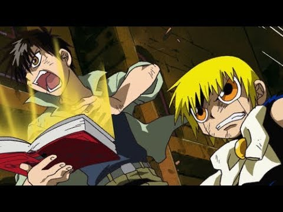
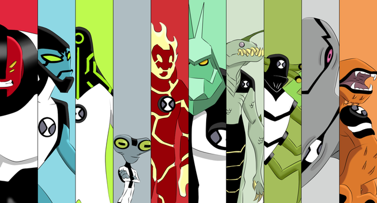
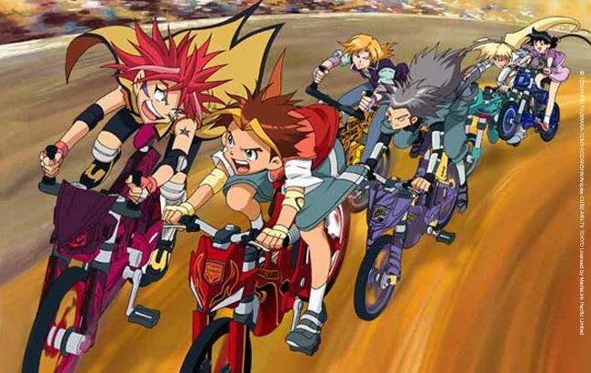
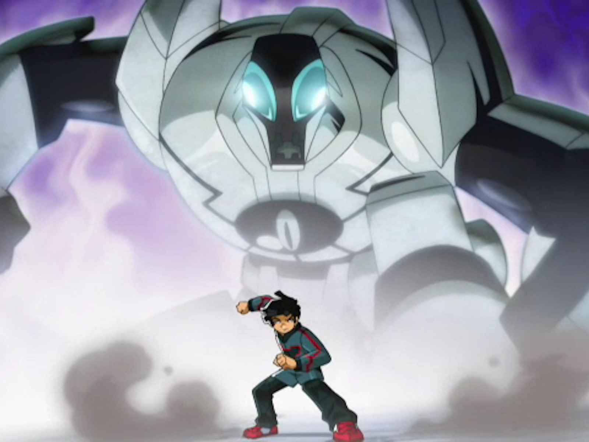
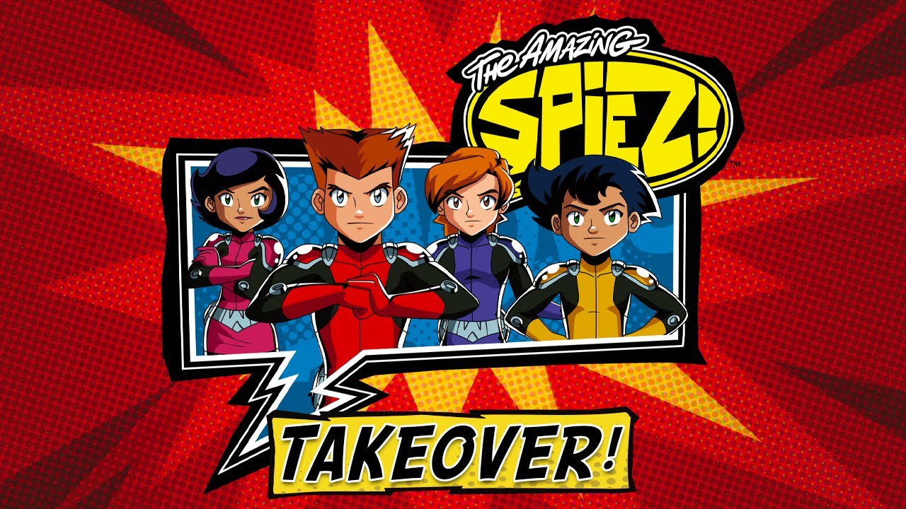

Nostalgic Gems: Rediscovering Classic Cartoons of the Television Era
Introduction:
Close your eyes and take a moment to journey back to a time when the flickering glow of the television screen held the key to a world of imagination and wonder. For those of us who grew up in the not-so-distant past, the television era was a golden age of animated brilliance, where colorful characters, thrilling adventures, and life lessons unfolded before our very eyes. It was a time when the phrase 'Saturday morning cartoons' ignited a spark of excitement within us, and rushing home from school meant immersing ourselves in the captivating stories that unfolded with each episode.
In an era before the internet took over, we were the last generation fortunate enough to experience the joy of quality cartoons primarily on television. These were the shows that shaped our childhood, leaving an indelible mark on our hearts and minds.
Welcome to 'Nostalgic Gems: Rediscovering Classic Cartoons of the Television Era.' In this blog, we'll delve into a treasure trove of beloved animated series that captured our imaginations and fueled our dreams. From the high-speed races of 'Idaten Jump' to the electrifying battles of 'Zatch Bell', from the superheroic adventures of 'Ben 10' and 'Generator Rex' to the mystical realms of 'Redakai', and not forgetting the thrilling escapades of 'The Amazing Spies', we'll unlock the vault of cherished memories and relive the magic of these extraordinary shows. So snuggle into your favorite spot on the couch, and let's embark on a journey back in time to rediscover the timeless classics that defined the television era for our generation."
Zatch Bell!!
Alternate title: Konjiki no Gash Bell!!
Genre: Fantasy, Adventure, Comedy
Channel Aired In (Indian Television): Sonic
Release Date: 2003
Synopsis: Zatch Bell follows the story of Kiyo Takamine, a brilliant yet socially awkward middle schooler, who discovers a mysterious book that unleashes a spell-casting mamodo named Zatch Bell. Kiyo soon realizes that Zatch is no ordinary child, as he is a contestant in a battle to become the king of the mamodo world. Together, they embark on a thrilling journey filled with battles, friendships, and personal growth.

Zatch Bell captured our hearts with its blend of humor, action, and emotional depth. The endearing relationship between Zatch and Kiyo, coupled with the thrilling battles and meaningful character arcs, made it a standout series of the television era. The show's exploration of friendship and personal growth resonated with viewers of all ages.
Similar Shows: If you enjoyed Zatch Bell, you may also like "Pokemon" for its adventure and battling elements, or "Fairy Tail" for its magical world and engaging characters.
Ben 10
Sequels: alien force, ultimate alien, omniverse
Genre: Action, Adventure, Science Fiction
Channel Aired In (Indian Television): Cartoon Network
Release Date: 2005
Synopsis: Ben 10 revolves around the story of Ben Tennyson, a 10-year-old boy who discovers a powerful alien device called the Omnitrix. With the ability to transform into various alien beings, Ben uses his newfound powers to protect the world from evil forces and extraterrestrial threats. Alongside his cousin Gwen and Grandpa Max, they embark on thrilling adventures across the globe, encountering both friends and foes.

Ben 10 captured our imaginations with its thrilling adventures, diverse alien transformations, and relatable protagonist. The combination of action, humor, and character growth made it an engaging and enjoyable series for viewers of all ages.
Similar Shows: If you enjoyed Ben 10, you may also like "Generator Rex" for its action-packed storytelling or "Teen Titans" for its team dynamic and superhero themes.
Idaten Jump
Episodes: 52
Genre: Action, Sports, Adventure
Channel Aired In (Indian Television): Sonic
Release Date: 2005
Synopsis: Idaten Jump follows the story of Sho Yamato, a young and passionate BMX cyclist who discovers the hidden world of Idaten Battles. These battles take place on a mysterious and treacherous track known as the X-Zone, where participants ride powerful bikes called Idaten Machines. With his friends and fellow Idaten Battle enthusiasts, Sho competes in thrilling races, overcoming challenges, and facing formidable opponents, all while striving to become the ultimate Idaten King.

Idaten Jump captivated us with its exhilarating BMX races, dynamic animation, and engaging storyline. The relatable characters, their growth, and the bonds they formed resonated with viewers, making it an enjoyable and inspiring series.
Similar Shows: If you enjoyed Idaten Jump, you may also like "Beyblade" for its competitive battles and unique powers or "Yowamushi Pedal" for its cycling-themed sports anime.
Redakai
Alternate title: Redakai: Conquer the Kairu
Genre: Action, Adventure, Fantasy
Channel Aired In (Indian Television): DisneyXD
Release Date: 2011
Synopsis: Redakai: Conquer the Kairu follows the thrilling journey of Ky, Maya, and Boomer, a team of young warriors known as the Redakai. Gifted with the ability to harness the energy force called Kairu, they travel across different dimensions, battling against evil forces led by the ruthless warlord Lokar. With their powerful Kairu-infused creatures, the Redakai strive to protect the Kairu energy from falling into the wrong hands and ensure the balance of power in the universe.

Redakai captured our imaginations with its imaginative world-building, thrilling battles, and engaging storyline. The concept of harnessing the Kairu energy and the dynamic interactions between the characters and their Kairu creatures drew us into the show.
Similar Shows: If you enjoyed Redakai, you may also like "Bakugan Battle Brawlers" for its strategic battles and supernatural elements or "Digimon Adventure" for its team of heroes exploring different dimensions and battling against evil forces.
The Amazing Spiez
Alternate title: The Amazing Spies: Adventures in Espionage
Genre: Action, Comedy, Spy
Channel Aired In (Indian Television): Discovery Kids
Release Date: 2011
Synopsis: The Amazing Spies follows the thrilling adventures of Lee, Marc, Megan, and Tony, a team of exceptional high school students who lead double lives as secret agents for the World Organization of Human Protection (WOOHP). Equipped with high-tech gadgets and impressive spy skills, they embark on dangerous missions around the world to combat villains, save the day, and maintain the safety of humanity.

The Amazing Spies captured our imagination with its thrilling missions, clever gadgets, and the camaraderie between the characters. The unique blend of action, comedy, and espionage made it an enjoyable and memorable series.
Similar Shows: If you enjoyed The Amazing Spies, you may also like "Totally Spies!" for its similar spy-themed adventures and strong female leads or "Kim Possible" for its blend of action, comedy, and teenage spy protagonists.